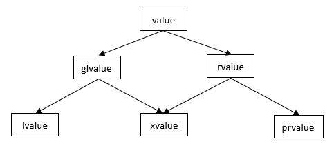

左值和右值（C++11之前）
参考：http://www.cnblogs.com/catch/p/3500678.html
参考：http://www.cnblogs.com/catch/p/3507883.html
参考：https://www.cnblogs.com/qicosmos/p/4283455.html
左值、右值是表达式的属性。
左值指的是既能够出现在等号左边也能出现在等号右边的变量(或表达式)。右值指的则是只能出现在等号右边的变量(或表达式)，例如1+2。
左值是有名字的变量，右值是由运算操作(加减乘除、函数调用返回值等)所产生的中间结果（没有名字）。
左值可以寻址，右值不能寻址。
右值引用T &&
C++11引入了右值引用T &&用来指向右值。
形如T &&a = foo();延长了返回值（右值）的生命周期，而T a = foo();需要经历一次拷贝构造（其实如果编译器开了RVO/NRVO优化的话也可以优化掉这个拷贝构造）。
对于基础类型，右值引用对象不能被修改，也不可被const、volatile所修饰；对于自定义类型，右值引用对象允许通过它的成员函数进行修改。
右值引用对象表示这个对象是濒死的，以后不再使用的。作为输入参数，表示这个对象的内容和资源可以被搬空而不用采用深拷贝。
因此，左值能被T &和const T &/T const&指向，右值能被const T &/T const&和T &&指向。
左值、将亡值、纯右值
C++11将表达式分为左值（Left Value, lvalue），将亡值（Expiring Value, xvalue），纯右值（Pure Right Value, prvalue）。
C++11之前的右值和C++11中的纯右值是等价的。
将亡值是被右值引用指向的那个值。
据我观察，左值和将亡值都是可以取到地址的，而纯右值取地址编译会报错。
#include <iostream>
using namespace std;
int main(int argc, char const* argv[])
{
int&& a = 1;
const int& b = 2;
cout << &a << endl;
cout << &b << endl;
return 0;
}
原因见这里，由于将纯右值绑定给右值引用或者常量引用，所以编译器不得不将1放到栈中并分配内存地址。
左值和将亡值合称泛左值(Generalized Lvalue, glvalue)。
纯右值和将亡值合称右值(Right Value, rvalue)。

- 左值：some_variable
- 将亡值：std::move(some_variable)
- 纯右值：1+3，函数返回的临时变量
移动语义（Move Semantic）和完美转发（Perfect Forward）
移动构造函数
对于一个对象，如果需要将这个对象的资源交给另一个同类型对象，并且不再需要这个对象（一般是函数返回的临时对象等），可以给这个类创建移动构造函数class_name(class_name&& other);。
一个类的移动构造函数的语义是接收一个右值引用对象，移动构造完毕后，之前那个右值引用对象将不能被使用。
std::move
返回参数的右值引用。从对象进入move函数，就不要再使用这个对象，因为它做好了被移动的准备。
std::forward
如果一个函数接受了一个右值引用参数，但在函数体内，这个参数其实被视为一个左值。
对于以下例子：
#include <iostream>
using namespace std;
namespace std {
//版本1
void func_overridden(int&& a)
{
cout << "Run function which received rvalue reference." << endl;
}
//版本2
void func_overridden(int& a)
{
cout << "Run function which received lvalue reference." << endl;
}
template <class A>
void factory(A&& a)
{
return func_overridden(forward<A>(a));
}
}
int main()
{
factory(5);//调用版本1
int a = 2;
factory(a);//调用版本2
}
std::forward能将参数真正的左右值属性转发给其他函数。
（为什么factory函数需要声明为函数模板？）
函数返回右值引用
如果函数声明为返回右值引用，然后返回函数内创建的非静态本地对象的话，是错误的！因为返回后，这个对象已经不存在了。